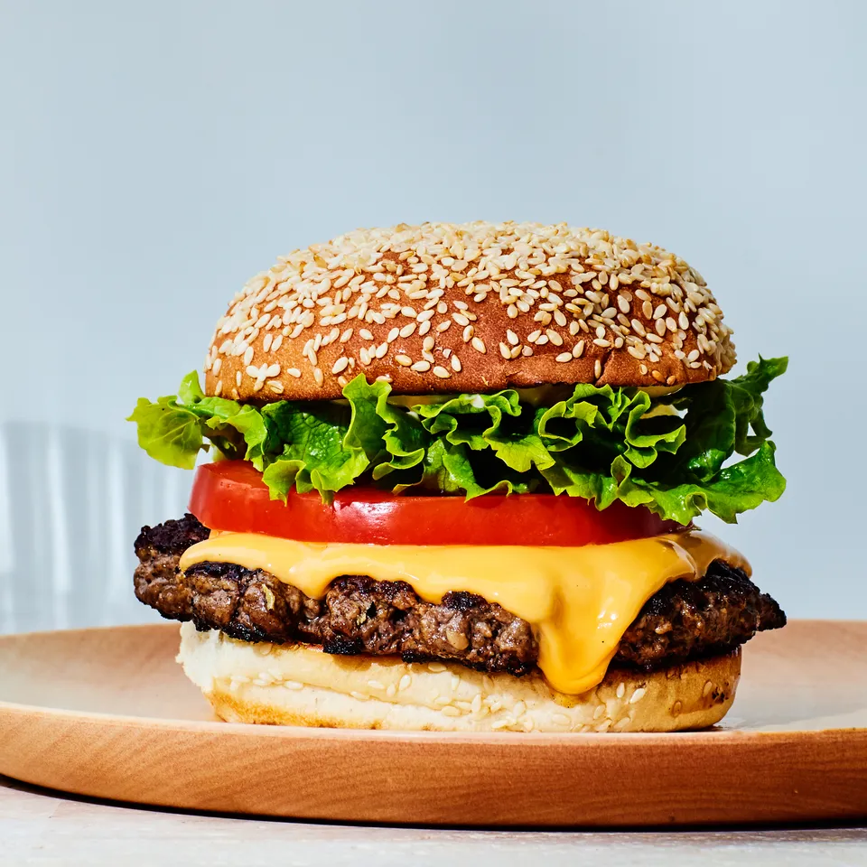

The Classic Cheese Burger Recipe

Photo: Epicurious
An American Classic
The cheese burger is an American classic. You can't go wrong with patties of ground beef smothered with American cheese and placed between to fluffy buns. Yum! 'Murica!
The prep time for this dish is 15 minutes and it takes a 10 minutes to cook. The total time for creating your own delicious and juicy cheese burger is 25 minutes. This recipe is for 4 servings.
Ingredients
- 1 1/2 pounds of ground beef
- 1 tablespoon Worcestershire sauce
- 3/4 teaspoon garlic salt
- 4 slices of American cheese
- 4 hamburger buns
How to make a Cheese Burger Step-By-Step
- Combine ground beef, Worcestershire sauce, garlic salt, and paper.
- Form 8 patties.
- Place cheese on patties
- Cook patties of cast-iron skillet
- Serve on hamburger buns and enjoy!
Credit: The recipe on this page is from AllRecipes
Return to homepage